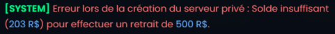
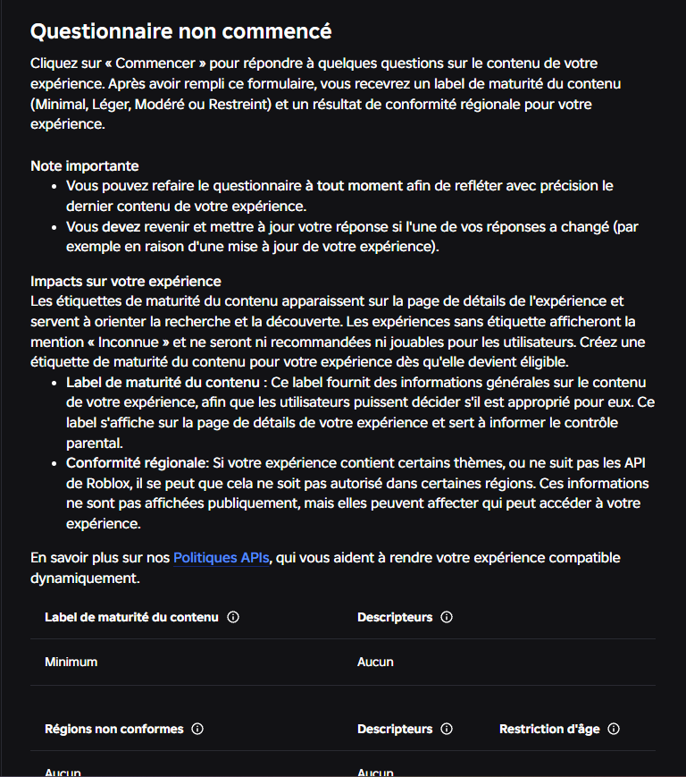
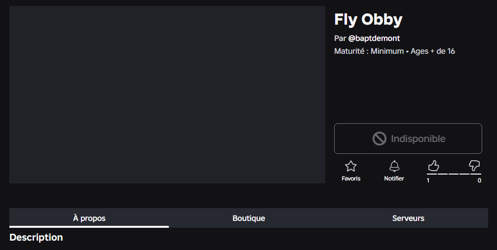
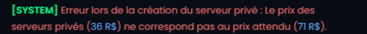
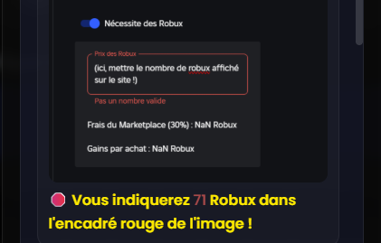

Les Différentes erreurs de paiements
Erreur n°1 : "Solde insuffisant (.. R$) pour effectuer un retrait de .. R$."
Cette erreur apparaît lorsque le montant de votre retrait dépasse notre stock de fonds actuel. Par conséquent, vous ne pouvez pas effectuer de retrait qui dépasse le montant disponible affiché sur cette page.

Vous pouvez effectuer un retrait pour un montant inférieur au solde disponible ou alors attendre que plus de fonds soient disponibles. Pour plus d'informations sur l'ajout de fonds, rejoignez notre support.
Erreur n°2 : "Complètez le questionnaire de maturité de cet emplacement pour pouvoir effectuer un retrait sur celui-ci."
Cette erreur apparaît lorsque vous n'avez pas encore complété le questionnaire de maturité pour cet emplacement. Vous devez terminer ce questionnaire avant de pouvoir effectuer un retrait sur cet emplacement.

Vous devez compléter le questionnaire de maturité pour cet emplacement avant de pouvoir effectuer un retrait. Pour cela, cliquez sur le lien fourni dans le tutoriel et suivez les instructions pour compléter le questionnaire. Une fois terminé, vous pourrez effectuer votre retrait.
Erreur n°3 : "Votre emplacement Roblox est invalide. Nous ne pouvons pas créer de serveurs privés sur celui-ci. Pour plus d'informations, nous vous invitons à re-vérifier l'état de votre emplacement."
Cette erreur est rare mais apparait malheureusement de plus en plus souvent. Cette erreur signifie que votre jeu Roblox est affiché comme invalide lorsque nous essayons de nous rendre sur cet emplacement. Par conséquent, nous ne pouvons pas créer de serveurs privés sur celui-ci car Roblox ne nous autorise pas à le faire. Cela peut être dû à un problème temporaire sur Roblox, ou à un problème avec votre jeu lui-même. Cela arrive également si vous n'avez pas vérifier votre âge sur Roblox avec l'estimation de l'âge facial (Facial Age Estimation).

Pour contrer ce problème que de plus en plus de joueurs rencontrent, nous avons trouvé une solution. Mais deux méthodes s'imposent selon les utilisateurs mobiles et PC. De plus, il vous faudra impérativement vérifier votre âge sur Roblox.
Si vous êtes sur PC, vous pouvez essayer de vous rendre sur Roblox Studio et de publier votre jeu à nouveau avec Alt + P sur Windows ou Option + P sur macOS. Cela peut résoudre le problème et rendre votre jeu valide pour la création de serveurs privés.
Si vous êtes sur mobile, la procédure est beaucoup plus complexe. La seule solution que nous avions trouvée est de recréer un nouveau compte Roblox pour qu'un nouveau jeu soit créé sur celui-ci. Ensuite, attendez 2 jours et publiez votre jeu sur ce nouveau compte pour le rendre public. Après cela, vous pourrez utiliser ce nouveau jeu pour effectuer vos retraits. Le seule problème est que vous receverez vos R$ sur ce nouveau compte et non sur votre compte principal. Nous vous conseillons donc de transférer vos R$ sur votre compte principal en l'ajoutant en ami de confiance puis de créer un Game-Pass sur le jeu dont nous n'avons pas accès. Une fois cela fait, vous receverez vos R$ sur votre compte principal avec un taxe de 30% de Roblox.
Une vidéo Youtube sera bientôt disponible pour vous aider à résoudre ce problème.
Erreur n°4 : "Le prix des serveurs privés (.. R$) ne correspond pas au prix attendu (.. R$)."
Cette erreur se produit lorsque le prix du serveur privé ne correspond pas au prix attendu par notre système de payment. C'est souvent le cas lorsque vous tentez de créer un serveur privé avec un prix différent de celui demandé par notre système.


Pour résoudre ce problème, assurez-vous de saisir le bon prix pour votre serveur privé. De plus, un délai de 60 jours est imposé par Roblox entre deux modifications du prix donc il est crucial de revérifier les informations avant de procéder à une modification de votre jeu.
Erreur n°5 : "Attendez ..s avant un nouveau retrait."
Cette erreur se produit lorsque vous tentez de faire un retrait trop rapidement après un autre retrait.
Attendez le temps imparti avant de faire un nouveau retrait.